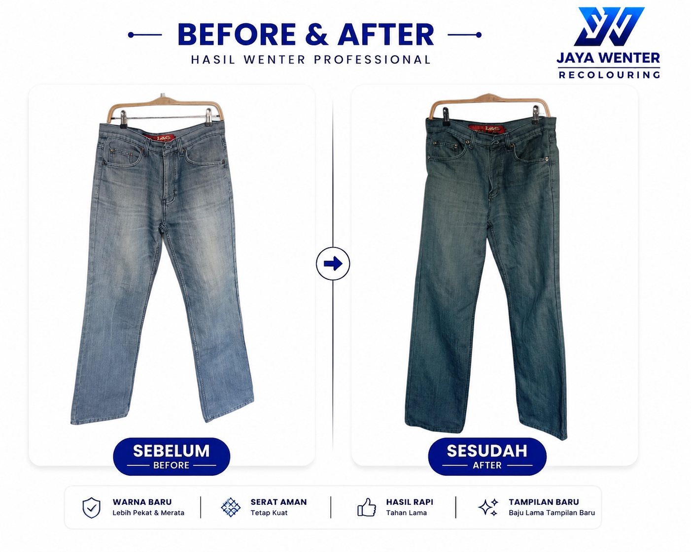
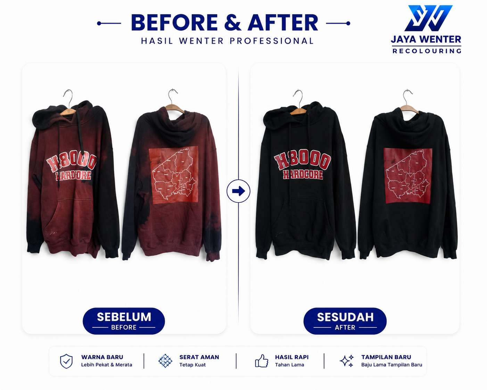
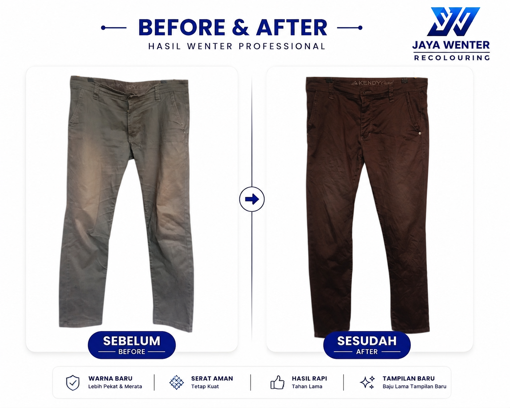
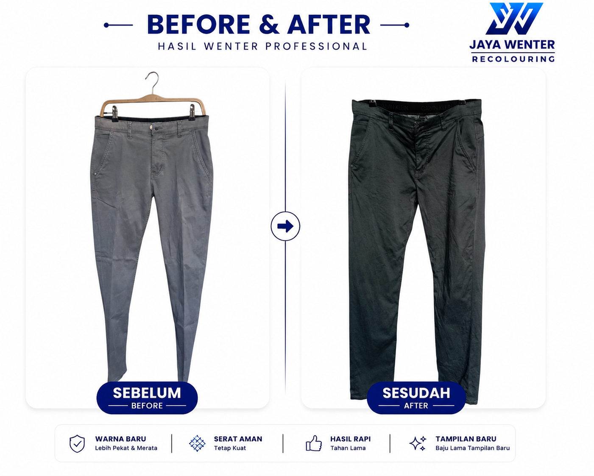
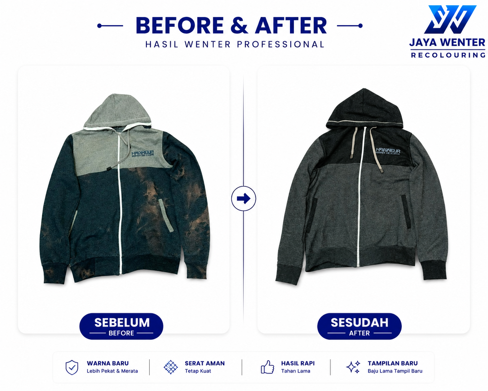
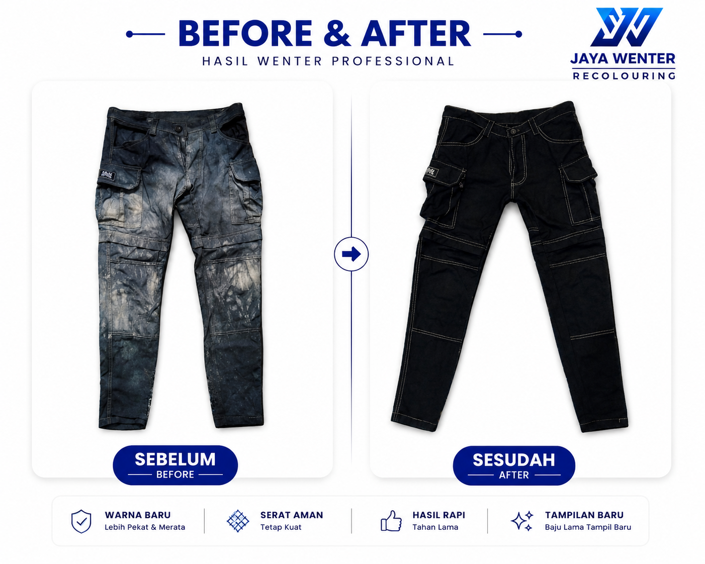

Lihat berbagai hasil before-after wenter yang telah kami kerjakan.

Topi Nike hitam yang warnanya pudar diwenter menjadi hitam kembali.

Celana jeans yang warna asalnya abu-abu muda dan memudar diwenter menjadi abu-abu tua sehingga warnanya terlihat fresh.

Hoodie yang warnanya belang bagian depan dan belakang diwenter sehingga bagus kembali warnanya.

Celana panjang yang warnanya sudah pudar diwenter sehingga menjadi bagus kembali.

Celana yang warnanya sudah pudar diwenter sehingga warnanya menjadi bagus kembali.

Celana jeans yang warna asalnya abu-abu muda dan memudar diwenter menjadi abu-abu tua.

Hoodie yang warnanya belang karena terkena pemutih diwenter sehingga bagus kembali warnanya. Hasilnya seperti punya 2 warna karena 2 bagian itu bahan kainnya berbeda.

Celana panjang yang warnanya belang karena terkena pemutih diwenter sehingga bagus kembali.

Celana kain katun yang warna asalnya hijau yang sudah pudar dan belang dan diwenter menjadi hitam sehingga warnanya rata kembali.

Hoodie yang warnanya sudah memudar diwenter menjadi hitam kembali.

Celana jeans biru yang warnanya memudar diwenter menjadi lebih pekat.

Celana jeans hijau yang warnanya sudah memudar dan kelihatan belang diwenter menjadi lebih pekat.

Dress denim biru yang warna aslinya biru langit diwenter menjadi warna biru tua.

Celana pendek yang warnanya memudar dan belang diwenter menjadi hitam.

Kaos Nike yang warnanya asalnya biru muda diwenter menjadi hitam. Bordiran ikut kewenter menjadi hitam karena bordirannya dari benang katun.

Celana pendek Uniqlo yang warnanya memudar diwenter menjadi hitam kembali.

Kaos Polri yang warnanya asalnya krem diwenter menjadi hitam. Bordiran ikut kewenter hitam karena dari benang bordir katun.

Hoodie Stone Island yang warnanya memudar diwenter menjadi hitam kembali.

Celana jeans yang warnanya memudar diwenter menjadi hitam kembali.

Jaket jeans yang warnanya asalnya biru terang diwenter menjadi hitam.

Kaos dalam yang warnanya asalnya orange dirubah menjadi hitam.

Jaket jeans yang warnanya asalnya biru cerah diwenter menjadi biru tua.

Rok jeans yang warnanya belang kena pemutih diwenter menjadi hitam agar tertutup belangnya.

Celana jeans coklat yang warnanya memudar diwenter menjadi lebih pekat.

Jaket hoodie yang warnanya memudar diwenter menjadi lebih pekat.

Tas eiger yang warnanya memudar diwenter menjadi lebih pekat.
Tidak ada hasil ditemukan
Coba kata kunci lain, misalnya nama barang (jeans, hoodie, tas), merk (Nike, Uniqlo), atau warna (hitam, biru).